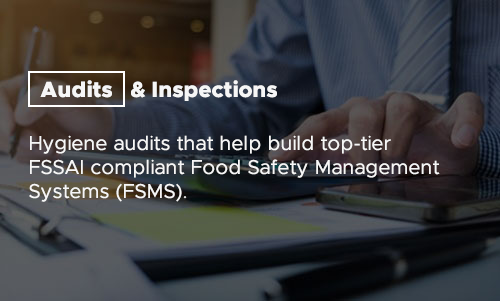

What are Audits and Inspections?
Audits comprise of -
- Gap Audits: Identification of loopholes existing in the premises in terms of food handling, preservation, infrastructure, training, etc.
- Hygiene Audits: Highlighting the hygiene of the premises, machines, and utensils used, personal hygiene, as well as maintaining the overall cleanliness of the site
- Operational Audits: Detailed analysis of the restaurant and kitchen audit; its planning, process and outcome
Inspections consists of -
- Self Inspections: Inspecting the site and identifying the non-compliances, with an evaluation score. This is done by checklists provided by the FSSAI
- Third-Party Inspections: Either a registered government body (FSSAI) or private Food Safety Consultancy conducts Inspections at your site
- Follow-up Inspection: These inspection occur when a facility has been marked under non-compliance from a previous inspection. They take place not more than 2 weeks from the initial inspection
Benefits of Audits and Inspections for –
Food Manufacturers
- Understanding the Hygiene and the Compliance score of their premise
- Identification of the loopholes and their solutions
- Enhanced safety and quality standards that can be followed
- Production of the safe product for the consumers
Brand Owners
- Protection of Product’s brand
- Credibility and Quality assurance
- Competitive edge in the Food Industry
- Growth in Business and Consumers
Restaurants
- Awareness of the Compliance standards and the requisites
- Analysis of drawbacks in food quality auditing and implementing effective solutions
- Facilitates improvement in existing flaws by adhering to FSSAI standards and regulations
- Ensures food safety and hygiene practices by staff at the premises